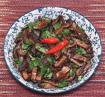

|
Dried Mushroom SaladChina, Yunnan, Mosuo | ||||
| Makes: Effort: Sched: DoAhead: |
8 oz ** 1-1/4 hr Most |
An very intense salad from the Tibetan region of northwest Yunnan. In small bowls it can make 3 or even 4 servings. | |||
|
2-1/4 ------- 2 1 1 1/4 ------- ar |
oz --- T T T t --- |
Mushroom,dry (1) -- Dressing Black Vinegar (2) Soy Sauce Chili Oil (3) Salt -- Finish Cilantro |
Make - (1-1/4 hr - 15 min work)
|